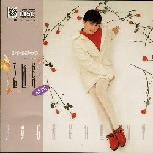
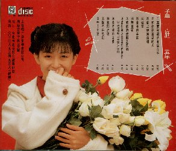

| タイトル一覧 | 次のＣＤ |
| １９９０年５月４日 | 其實我還是有些在乎 | ＳＣＤ−６６２０ |
|---|---|---|
|  | 上格雷射唱片（SAN GER MUSIC Co., LTD.） | |
| ||
|  | このアルバムの歌詞カードにＹＡＹＡのちょっとしたプロフィールが
書いてありました。 孟庭葦 一個和餅乾説話的女孩 小名／亞亞 生日／５８．１２．２２ 籍貫／台湾省彰化縣 血型／ＡＢ 星座／射手 嗜好 冩生・音楽・説故事 喜愛食物 牛（女乃）味濃的餅乾・布丁 寵物／波波（狗） 経歴 台中市青少年歌唱（才雷）台 冠軍台中各大民歌西餐 ．．．． | |